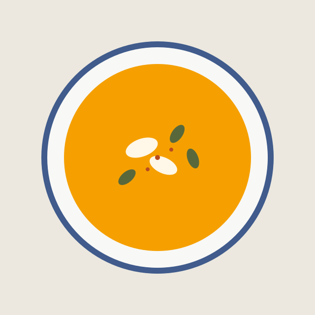

Тыквенный супчик на кокосовом молоке
Если у вас осталась тыква, и вы не знаете что с ней сделать, то это решение для вас! Ароматный, согревающий суп-пюре на кокосовом молоке. Можно даже в Пост!
Никаких кулинарных книг и блокнотов! Храни все любимые рецепты в одном месте.
Добавляй рецепты и указывай наиболее популярные теги. Это позволит быстро находить любые категории.
Время приготовления таких блюд не более 1 часа.
Самые полезные блюда, которые можно детям любого возраста.
Требуют умения, времени и терпения, зато как в ресторане.
Чем удивить гостей, чтобы все были сыты за праздничным столом.

Если у вас осталась тыква, и вы не знаете что с ней сделать, то это решение для вас! Ароматный, согревающий суп-пюре на кокосовом молоке. Можно даже в Пост!
Введите примерное название блюда, а мы по тегам найдём его.